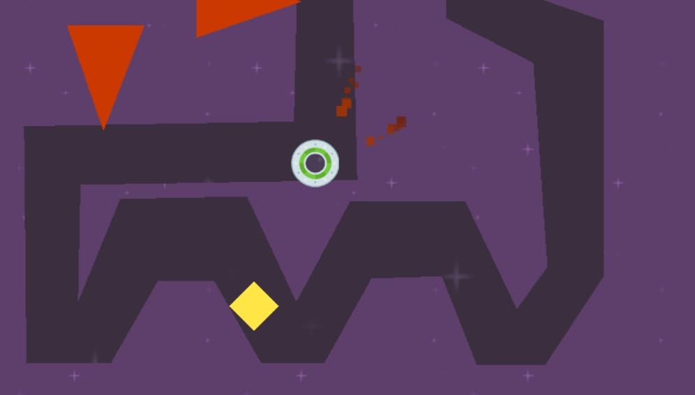
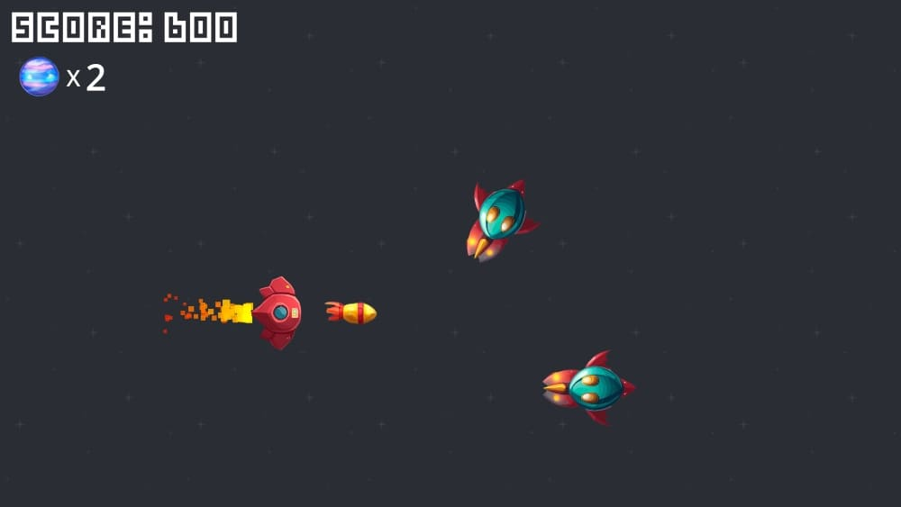
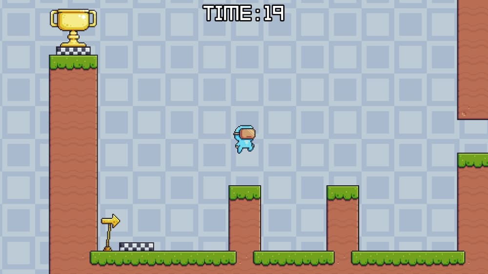

The past june I decided to work on game dev projects on my own, both for building portfolio and getting practice. However, I had some friends interested in game dev with programming knowledge, so I asked them and they wanted to participate. Asking some more, we ended up with 5 members and a name: Atomic Ferry. I took the role of product manager, and for the first project, every member of Atomic Ferry would take part in a Gamedev.tv course about Godot.
The course was divided in 3 projects during which we would learn the fundamentals of Godot. To spice things up, I asked every member to, once they finished a project, go freestyle and add some more to it, whatever they feel like. During this article, I'm going to go through each project and what each member of Atomic Ferry added to them.

Speedy Saucer
The first project in the course was Speedy Saucer, a physics-based game where the player has to navigate through a maze. The main appeal of the game is its difficulty managing the speed of the disc you control to not crash.
Speedy Saucer was the base for the rest of the course. This is where we learnt about the different types of Nodes, Rigidbodies and GDScript's fundamentals. Nothing revolutionary, but it was good to get the hang of the UI and the peculiarities of GDScript.
Since this was the first and simplest project, some people wanted to show off and do a whole other game. This is what each member of the team changed:
- David. David decided to create a whole new game called RocketMan, also physics-based but you instead control a rocket and have to avoid obstacles while going up.
- Javier. Javi was a show off, and not only did a racer game, but he also added local multiplayer controls and multiple cameras.
- Alex. Alex wanted to keep it simple and did the classic Pong, with an incorporated rival AI.
- Olivia. Olivia messed around with the playable character and changed it so it was shaped like the podracing vehicles from Star Wars!
- Ismael. For me, I just added new obstacles that moved around to add some spice to the tracks with movements based on sine and cosine functions.
You are able to check out the code and the project of each member's version of Speedy Saucer here.
Alien Attack
The second project was Alien Attack, a classic bullet-hell where the player has to avoid and shoot down enemy ships that appear on the right.
In Alien Attack, the main thing we learnt about were entities and instantiations, used in the many enemies and projectiles it uses. Here we also learnt how to implement UI, sprites and particles. We also learnt about signals, a complete game changer.
This is what each member of the team added to the base game:
- David. David added lives to the main player and the ability to repair the ship, and increasing difficulty that progresses by getting more points where the enemies go faster and appear smaller.
- Javier. Javi added the typical power up in bullet-hell like games where you shoot 3 projectiles at the same time, as well as some upgrades to the UI.
- Alex. Alex made some tweaks to the UI and added music, but the biggest change was a new ammunition system for the proyectiles.
- Olivia. Olivia this time wanted to focus on game feel, adding upgrades to the visuals, SFX, music, etc. A complete overhaul.
- Ismael. This time, I wanted to show off and decided to incorporate a new boss fight, with a laser attack and a sprite made by myself.
You are able to check out the code and the project of each member's version of Alien Attack here.
Martian Mike
The final project of the course was Martian Mike, a simple 2D platformer where you have to navigate through obstacles and platforms to get to the goal before the timer goes out.
Martian Mike was mostly about using already learnt elements of Godot and level up. However, there were a lot of new things too, like how to use sprite sheets, animations and tilemaps.
This is what each member of the team added to the base game:
- David. David implemented two new types of jump: the high jump, the typical higher jump achieved by holding the button; and the double jump.
- Javier. Javi also did the high jump, but he also added a flying button to fall slower just like Duck Game.
- Alex. Alex unfortunately lost his project before uploading it. But he swears it was fun!
- Olivia. Olivia once again wanted to work on the game feel, but she also designed some wicked levels. I recommend playing them... if you dare.
- Ismael. I wanted to focus on game feel and wanted to try some quality of life features in modern platformers, such as coyote jump and bunny hops. I also added a new item: the key, which was used to unlock the goal and be able to complete the level.
You are able to check out the code and the project of each member's version of Martian Mike here.
Conclusion
Embarking on this project with my friends is both exciting and scary. Some of them are still in college and the rest of us are working, so there will probably be tons of headaches in the road. But I want to see this through, and at least try to make fun projects with my colleagues and bigger that I would be able to make alone. They are very excited for this, and I will be able to flex my Game Design and Project Management skills, so at least it's worth trying. Stay tuned to see where this trip leads us to!